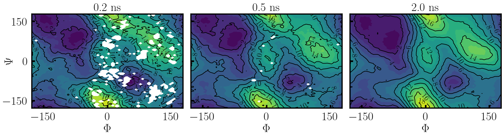

Compute the alanine dipeptide [\(\Phi,\Psi\)] transition using OpenMM and OPES-eABF
In this brief tutorial, we calculate the Ramachandran [\(\Phi\),\(\Psi\)] plot of alanine dipeptide in vacuum using the OPES-eABF method.
Alanine dipeptide is a popular test system for enhanced sampling algorithms because it is a minimal example of sampling challenges that are posed by many biological systems. The slow motions of the molecule are largely governed by the \(\Psi\) (backbone N-C-C-N) and \(\Phi\) (backbone C-N-C-C) dihedrals.
An interactive visualization of the alanine dipeptide molecule can be shown with nglview. Atoms involved in the [\(\Phi\),\(\Psi\)] collective variable (CV) are shown in ball and stick representation, while other atoms are transparent.
[2]:
import pytraj as pt
import nglview as ngl
traj = pt.load("../data/alanine-dipeptide.pdb", top='../data/alanine-dipeptide.prmtop')
view = ngl.show_pytraj(traj)
view.clear_representations()
view.add_ball_and_stick('@6,8,14,16', opacity=1.0) # CV atoms of phi torsion
view.add_ball_and_stick('@4,6,8,14', opacity=1.0) # CV atoms of psi torsion
#view.add_ball_and_stick('@1,4,6,8', opacity=1.0) # CV atoms of theta torsion
view.add_licorice(opacity=0.5)
# uncomment for interactive visualization in a notebook
#view
While the interactive visualization is not possible on the web page, this is what you should see in a notebook:
Importance sampling of the [\(\Phi,\Psi\)] plane with OPES-eABF
Below, the OPES-eABF sampling algorithm is applied to enhance sampling in the [\(\Phi,\Psi\)] plane. For this purpose, an OpenMM simulation object is created using AMBER parameter and coordinate files and the OpenMM interface to the adaptive sampling package.
[3]:
from sys import stdout
import numpy as np
from openmm import *
from openmm.app import *
from openmm.unit import *
from adaptive_sampling.interface.interface_openmm import AdaptiveSamplingOpenMM
# ------------------------------------------------------------------------------------
# define collective variables
cv_atoms_psi = [6, 8, 14, 16] # backbone N-C-C-N torsion
cv_atoms_phi = [4, 6, 8, 14] # backbone C-N-C-C torsion
minimum = -180.0 # minimum of the CV
maximum = 180.0 # maximum of the CV
bin_width = 5.0 # bin width along the CV
periodicity = [ # define periodicity of CVs (needs to be given in radians as units are not converted)
[-np.pi, np.pi],
[-np.pi, np.pi],
]
collective_var = [
["torsion", cv_atoms_psi, minimum, maximum, bin_width],
["torsion", cv_atoms_phi, minimum, maximum, bin_width],
]
# ------------------------------------------------------------------------------------
# Setup OpenMM
prmtop = AmberPrmtopFile(f"../data/alanine-dipeptide.prmtop")
crd = AmberInpcrdFile(f"../data/alanine-dipeptide.crd")
system = prmtop.createSystem(
nonbondedMethod=NoCutoff,
constraints=HBonds,
)
# Initialize the `AdaptiveSamplingOpenMM` interface to couple the OpenMM simulation to a bias potential
# The OpenMM `simulation` object is set up internally, but can still be modified by calling `the_md.simulation` or `the_md.integrator`
the_md = AdaptiveSamplingOpenMM(
crd.positions,
prmtop.topology,
system,
dt=2.0, # timestep in fs
equil_temp=300.0, # temperature of simulation
langevin_damping=1.0, # langevin damping in 1/ps
cv_atoms=np.unique(cv_atoms_phi+cv_atoms_psi) # specifying CV atoms significantly speeds up simulation of large systems, as the bias force will only be calculated for those
)
the_md.integrator.setConstraintTolerance(0.00001)
# Append OpenMM reporters to simulation for output
the_md.simulation.reporters.append(DCDReporter('alanine-dipeptide.dcd', 100))
the_md.simulation.reporters.append(StateDataReporter(
stdout,
100,
step=True,
time=True,
potentialEnergy=True,
kineticEnergy=True,
totalEnergy=True,
temperature=True,
speed=False,
separator='\t')
)
The OPES-eABF sampling algorithm is attached to the OpenMM simulation.
[4]:
from adaptive_sampling.sampling_tools import OPESeABF
eabf_ext_sigma = 5.0 # thermal width of coupling between CV and extended variables in degrees
eabf_ext_mass = 100.0 # mass of extended variable
abf_nfull = 100 # number of samples per bin when the ABF force is fully applied
opes_kernel_std = [5.0, 5.0] # kernel standard deviations of Phi and Psi in degrees
opes_frequency = 500 # frequency of kernel creation in MD steps
opes_barrier = 50.0 # Barrier parameter in kJ/mol
opes_adaptive = False # Adaptive standard deviation of kernels, useful for sampling along bad CVs
opes_gamma = None # Bias factor for Well-Tempered distribution, if None, calculated from barrier parameter
the_bias = OPESeABF(
the_md,
collective_var,
# eABF parameters
ext_sigma=eabf_ext_sigma,
ext_mass=eabf_ext_mass,
nfull=abf_nfull,
# OPES parameters
kernel_std=opes_kernel_std,
update_freq=opes_frequency,
bias_factor=opes_gamma,
adaptive_std=opes_adaptive,
energy_barr=opes_barrier,
# general parameters
output_freq=10, # frequency of writing outputs
f_conf=0.0, # confinement force of CV at boundaries
equil_temp=300.0, # equilibrium temperature of simulation
periodicity=periodicity, # periodicity of CVs
verbose=True, # print verbose output
)
the_md.set_sampling_algorithm(the_bias) # to take effect, the sampling algorithm has to be set in the AdaptiveSamplingOpenMM interface
>>> INFO: Initialize torsion as collective variable:
Minimum0: -180.0 Degree
Maximum0: 180.0 Degree
Bin width0: 5.0 Degree
>>> INFO: Initialize torsion as collective variable:
Minimum1: -180.0 Degree
Maximum1: 180.0 Degree
Bin width1: 5.0 Degree
----------------------------------------------
Total number of bins: 5184
>>> INFO: OPES Parameters:
---------------------------------------------
Kernel_std: [0.08726646 0.08726646]
Rescaling: True
Adaptive: False (5000 steps)
Normalize: True (approximated: True)
Explore: False
Barrier: 11.9503 kcal/mol
Bias factor: 20.045403709021212
Read force: True
Kernel merge: True (threshold: 1.0)
---------------------------------------------
>>> INFO: Extended-system Parameters:
---------------------------------------------
Coupling: [0.08726646 0.08726646]
Masses: [100. 100.]
---------------------------------------------
>>> INFO: ABF enabled for OPES-eABF (N_full=100)
>>> adaptive-sampling: Module 'ase' not found, will not import 'FENEB'
/home/robert/Bachelor_Thesis/Code/adaptive_sampling/adaptive_sampling/colvars/colvars.py:215: UserWarning: Using torch.cross without specifying the dim arg is deprecated.
Please either pass the dim explicitly or simply use torch.linalg.cross.
The default value of dim will change to agree with that of linalg.cross in a future release. (Triggered internally at /opt/conda/conda-bld/pytorch_1720538438750/work/aten/src/ATen/native/Cross.cpp:62.)
self.cv = torch.atan2(torch.dot(torch.cross(q23_u, n1), n2), torch.dot(n1, n2))
[5]:
# WARNING: For long simulations, this can become expensive, and it is recommended to perform the computation on an HPC cluster.
if os.path.isfile('CV_traj.dat'):
os.system("rm CV_traj.dat opeseabf.out")
the_md.run(nsteps=1000) # 500000 * 2 fs = 1 ns
#"Step" "Time (ps)" "Potential Energy (kJ/mole)" "Kinetic Energy (kJ/mole)" "Total Energy (kJ/mole)" "Temperature (K)"
100 0.20000000000000015 -14.69729698585465 81.81212348484868 67.11482649899403 385.87202990466926
200 0.4000000000000003 -17.35861527983259 85.32225493601415 67.96363965618156 402.4277858317756
300 0.6000000000000004 -46.42447199266495 87.90057858385677 41.47610659119182 414.58861160386914
400 0.8000000000000006 -16.564945457376268 77.15117856536602 60.586233107989756 363.888389818763
500 1.0000000000000007 -42.760607527450546 77.7586562795857 34.99804875213515 366.75359669426
600 1.2000000000000008 -35.78178557575954 43.68505452738508 7.9032689516255346 206.0433093403335
700 1.400000000000001 -52.89746176077644 69.58132670195477 16.683864941178328 328.1847070369183
800 1.6000000000000012 -48.167972714775914 76.24319766493682 28.0752249501609 359.6058407509813
900 1.8000000000000014 -46.69024601386794 76.35103121618545 29.660785202317506 360.11444448279667
1000 2.0000000000000013 -46.917748252927744 62.86855137403911 15.950803121111363 296.52347968158017
Analysis of Results
Visualize the trajectory with NGlView
The following will create an interactive visualization of the trajectory:
[6]:
path = '.'
traj = pt.iterload(f"{path}/alanine-dipeptide.dcd", top="../data/alanine-dipeptide.pdb")
view = ngl.show_pytraj(traj)
view.clear_representations()
view.add_ball_and_stick('@6,8,14,16', opacity=1.0) # CV atoms of phi torsion
view.add_ball_and_stick('@4,6,8,14', opacity=1.0) # CV atoms of psi torsion
#view.add_ball_and_stick('@1,4,6,8', opacity=1.0) # CV atoms of theta torsion
view.add_licorice(opacity=0.5)
#view
Trajectory of CVs
All important information for post/processing of the trajectory is stored in CV_traj.dat.
[7]:
cv_traj = np.loadtxt(f'{path}/CV_traj.dat', skiprows=1)
cv_phi = cv_traj[:,1] # Phi trajectory (first CV)
cv_psi = cv_traj[:,2] # Psi trajectory (second CV))
la_phi = cv_traj[:,3] # extended-system Phi trajectory
la_psi = cv_traj[:,4] # extended-system Psi trajectory
In the following, the trajectory of the extended system is plotted for \(\Phi\) (blue) and \(\Psi\) (orange). The physical trajectory of the corresponding CVs is plotted in light colors, which is tightly coupled to the extended system.
As the extended system trajectory is biased with OPES and ABF, the system immediatly starts diffusing along both reaction coordinates, such that in the long run the (\(\Phi,\Psi\)) plane is uniformely sampled.
[ ]:
import matplotlib.pyplot as plt
fig, axs = plt.subplots(1, 1, sharey=False, figsize=(8,6))
axs.scatter(cv_traj[:,0]/1000, cv_phi, s=0.1, alpha=0.5)
axs.scatter(cv_traj[:,0]/1000, la_phi, s=0.5, color='C0', linewidth=2, label='$\Phi$')
axs.scatter(cv_traj[:,0]/1000, cv_psi, s=0.1, alpha=0.5)
axs.scatter(cv_traj[:,0]/1000, la_psi, s=0.5, color='C1', linewidth=2, label='$\Psi$')
axs.set_xlim([0,2])
axs.set_ylim([-181,181])
axs.set_yticks([-180,0,180])
axs.set_xlabel('time / ps', fontsize=30)
axs.set_ylabel('CV / Degree', fontsize=30)
axs.tick_params(axis='y',length=6,width=3,labelsize=25, pad=10, direction='in')
axs.tick_params(axis='x',length=6,width=3,labelsize=25, pad=10, direction='in')
axs.spines['bottom'].set_linewidth(3)
axs.spines['top'].set_linewidth(3)
axs.spines['left'].set_linewidth(3)
axs.spines['right'].set_linewidth(3)
axs.legend(fontsize=20)
fig.tight_layout()
Use the MBAR estimator to compute ensemble properties
Now we will use the MBAR estimator to calculate the unbiased weights for the simulation frames. From those, periodic PMFs as well as other ensemble properties can be computed. Note that to converge PMFs, much longer trajectories are required!
WARNING: For long simulations, this can become expensive, and it is recommended to perform the computation on an HPC cluster.
[ ]:
from adaptive_sampling import units
from adaptive_sampling.processing_tools import mbar
ext_sigma = np.asarray([5.0,5.0])
# create grid for PMF
minimum = -180.0
maximum = 180.0
bin_width = 5.0
grid_1d = np.arange(minimum, maximum, bin_width)
xx, yy = np.meshgrid(grid_1d, grid_1d)
grid = np.vstack([xx.flatten(),yy.flatten()])
# trajectories of CVs and extended system
cv = np.vstack([cv_phi,cv_psi])
la = np.vstack([cv_phi,cv_psi])
recalc = True
if recalc:
print("==================")
print(" Running the MBAR ")
print("==================\t")
# run MBAR to obtain unbiased weights of frames
print("\nBuilding state windows from the continuous trajectory:")
traj_list, indices, meta_f = mbar.get_windows(
grid.T,
cv.T,
la.T,
ext_sigma,
dx=np.asarray([bin_width,bin_width]),
equil_temp=300.0,
progress_bar=True,
)
print("\nBuilding Boltzmann factors:")
exp_U, frames_per_traj = mbar.build_boltzmann(
traj_list,
meta_f,
equil_temp=300.0,
periodicity=[-180.,180.],
progress_bar=True,
)
weights = mbar.run_mbar(
exp_U,
frames_per_traj,
max_iter=10000,
conv=1.0e-2, # usually 1.0e-4
conv_errvec=1.0,
outfreq=10,
device='cpu',
)
np.savez(f"{path}/results.npz", W=weights, idx=indices)
else:
data = np.load(f'{path}/results.npz')
weights = data['weigths']
indices = data['idx']
Compute PMFs from frame weights
[ ]:
# 1D PMFs along phi and psi in kJ/mol
pmf_psi, rho_psi = mbar.pmf_from_weights(grid_1d, cv_psi[indices], weights, equil_temp=300.0)
pmf_phi, rho_phi = mbar.pmf_from_weights(grid_1d, cv_phi[indices], weights, equil_temp=300.0)
pmf_psi -= pmf_psi.min()
pmf_phi -= pmf_phi.min()
# 2D (phi,psi) PMF (Ramachandran plot) in kJ/mol
pmf_2d, rho = mbar.pmf_from_weights(
grid.T,
cv.T[indices],
weights,
dx=np.asarray([bin_width,bin_width]),
equil_temp=300.0,
)
pmf_2d -= pmf_2d.min()
pmf_2d *= units.kJ_to_kcal # convert to kcal/mol
Below, an example is shown of how the PMF should evolve over the course of 2 ns, quickly converging for the full [\(\Phi,\Psi\)] plane.

[ ]: